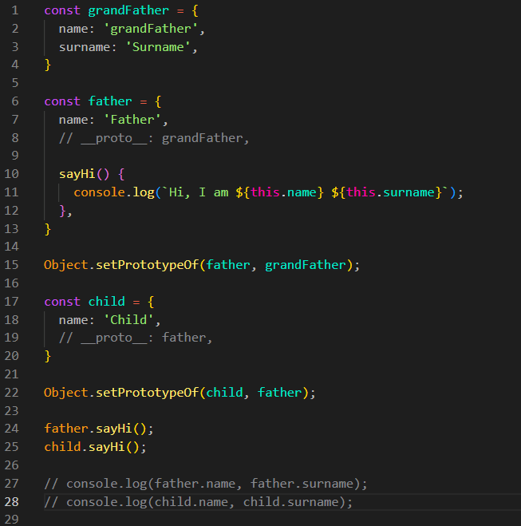
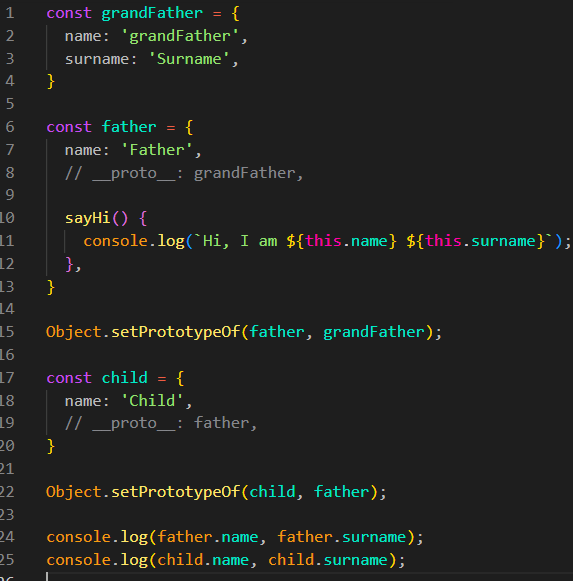

This in the Inherited Method
Intro
Agora iremos ver como funcionam os métodos herdados por meio de protótipos.
Agora iremos ver como funcionam os métodos herdados por meio de protótipos.
JS:

Para iniciarmos, teremos três objetos: grandFather, father e child. Eles ficarão relacionados por meio de protótipos:
const grandFather = {
name: 'GrandFather',
surname: 'Surname',
}
const father = {
name: 'Father',
sayHi() {
console.log(`Hi, I am ${this.name} ${this.surname}`);
},
}
Object.setPrototypeOf(father, grandFather);
const child = {
name: 'Child',
}
Object.setPrototypeOf(child, father);

Podemos observar que o objeto father possui um método chamado sayHi. Por isso, podemos chamá-lo usando father.sayHi();.
Quando chamamos father.sayHi();, o método é encontrado diretamente no objeto father. Como ele foi chamado usando o ponto, o this dentro do método será o objeto que está antes do ponto. Nesse caso, this é father.
Dentro do método temos this.name e this.surname. O name é encontrado diretamente em father. Já o surname não existe em father, então o JavaScript procura essa propriedade no protótipo, que é o objeto grandFather.
O mesmo acontece quando usamos child.sayHi();. O objeto child não possui o método sayHi, então o JavaScript procura em seu protótipo, que é father. Como father possui esse método, ele é encontrado e executado.
Nesse caso, o this continua sendo child, pois o método foi chamado como child.sayHi();. Quando o método procura this.surname, primeiro verifica child, depois seu protótipo father e, por fim, o protótipo de father, que é grandFather. Assim, encontra surname.
Porém, se tentarmos chamar grandFather.sayHi();, não irá funcionar. O objeto grandFather não possui esse método e também não o encontra em seu próprio protótipo.
O método pode ser herdado, mas o valor de this depende de quem chamou o método.
Se fizermos father.sayHi();, o this será father.
Se fizermos child.sayHi();, o método será encontrado em father, mas o this será child.
A busca por propriedades e métodos acontece primeiro no próprio objeto e, caso não sejam encontrados, continua pela cadeia de protótipos.
Conteúdo da aula